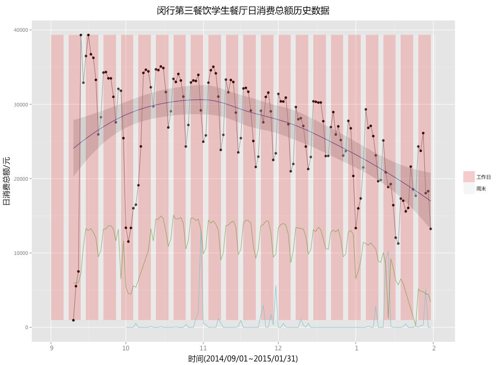

EMC杯智慧校园开放数据大赛
面对社会、科研、企业对于大数据人才的紧迫需求，上海交大网络信息中心联合EMC卓越研究集团，于2015年4月共同举办“EMC杯上海交大智慧校园数据分析大赛”。
这次数据分析大赛将开放校园数据，并启动数据训练营，鼓励同学和社会人士参与到大数据的学习和实践之中。
身为茫茫人海的一枚迷途小码农，我也奋不顾身地加入了这场比赛中……
我选择了赛题一：校园餐饮消费分析
分析基于商户信息、用户信息、交易记录、气象记录和校园网记录五个数据集。
- 商户信息：共134项观测，包含32个商户系统、85个子商户；
- 用户信息：共30861项观测，包含30861个一卡通账户、30812个学号，即有49名学生拥有两个一卡通账户；
- 交易记录：共7915289项交易记录，时间跨度为2014-09-01至2015-01-31；
- 气象记录：共26660项气象记录，时间跨度为2014-08-15至2015-03-25；
- 校园网记录：共12736408项校园网记录，时间跨度为2014-09-01至2015-01-31。
本硕博的比例大致为3:2:1，男女比约为2:1；本科生以95年居多，硕士生以91年居多，而博士生……苦逼啊……
32个商户系统中有部分重复，即以“新”字代表重新装修过的食堂，可以看到四餐包含的子商户即菜品种类最多。

上海阴雨天气不少，淅淅沥沥下个不停，偶尔还会来个雷阵雨下个爽。
9月份，开学咯；国庆假，回家咯；元旦节，回家咯；放寒假，过年咯～
大家最爱去哪里
最贵消费(元/次)
| 吉姆丽德 | 53.04 |
| 中西餐厅 | 52.10 |
| 本科生学务收费 | 50.90 |
| 曦潮书店 | 31.40 |
| 伊诺咖啡 | 28.97 |
业绩最佳(元)
| 三餐一楼 | 3.8e6 |
| 三餐二楼 | 2.7e6 |
| 绿园餐厅 | 2.6e6 |
| 上海快餐 | 2.2e6 |
| 川味点心 | 1.9e6 |
最受欢迎(人次)
| 水控系统2 | 6.7e5 |
| 三餐一楼 | 6.3e5 |
| 上海快餐 | 4.0e5 |
| 川味点心 | 3.9e5 |
| 闵西浴室 | 3.4e5 |
最低开销(元/次)
| 图书馆自助复印 | 0.85 |
| 闵东浴室 | 1.01 |
| 闵西浴室 | 1.03 |
| 水控系统2 | 1.04 |
| 闵北浴室 | 1.08 |
毫无疑问，吃饭花的钱是最多的，接下来就是逛超市的开销。
次数和总额大致成正比例，除了“用水”；洗澡虽然便宜，但却是人人必不可少的～
每次消费均值统计显示，最贵的是办理学生事务，其次是咖啡、活动、超市，接下来才是吃饭……
对于男生而言，三餐一楼和二楼是吃饭最大众的选择；哈乐之家的顾客大多是本科生，而六餐一楼则主要是硕士生和博士生。
女生和男生在各个子商户的选择上有着类似，但是相对于饭菜而言，女生更喜欢点心和超市。
业绩冠军：三餐一楼（闵行第三餐饮学生餐厅）
新闵行第三餐饮学生餐厅完成装修后于2014年9月2日重新投入营业。在观测时间范围内，营业额为3793804元，在各子商户中排名第一；消费人次达626013次，同样位于第一。
以下给出11月18日和11月25日三餐一楼消费记录的二维密度图和散点图，分别作为无雨天气和有雨天气的食堂就餐行为示例，并结合校园网数据和气象数据进一步分析影响就餐人数的可能因素。
晴天学生就餐时间更为集中，而雨天就餐时间则相对分散。从密度图和散点图都可以看出学生就餐时间和金额的分布，从散点图还可以看出不同学位学生就餐时间的差异。
以下分析三餐一楼每日消费总额和降雨量、每日校园网活跃人数的关系。黑色点线代表日消费总额，绿线代表每日校园网活跃人数，蓝线代表日均降雨量。可以看出，三餐一楼日消费总额呈现明显的周期效应：工作日就餐量增加，周末就餐量陡降，并且在节假日显著降低，如9月开学季、国庆节、元旦节和寒假。除此之外，紫色的回归线也暗示了在线人数的变化趋势。
每次降雨量的尖峰都将导致当日消费总额的明显下降，如10月31日、11月下旬、1月13日等；校园网日均活跃人数和当日消费总额有着极强的正比例相关，两者增幅的波动呈现出完全一致的特征，这也是情理之中的结果。

用户消费分类分析
在就餐、超市、活动、水果等消费分类中，男生和女生的行为习惯有何不同？本科生、硕士生和博士生的消费行为又有哪些不同？
可以很明显地看出，女生在就餐上的开销总体大约比男生少600元，硕士和博士在就餐上的花费范围也比本科生波动要大一些。
本科生在超市和点心上的消费比硕士和博士更多，女生在水果和咖啡上的消费也比男生要多一些。
从消费次数分布可以看到更明显的一些特征。男生人均比女生在食堂就餐的次数更多，女生比男生洗澡次数更多，本科生比硕士和博士生逛超市的次数更多。
从本科到硕士到博士，学生在食堂就餐的最低次数逐渐降低，也许是因为忙于科研没时间出去吃饭，所以养成了点外卖的习惯～
还有一个很出人意料的结论：各类用户（男和女，本硕博）中都有在就餐方面消费总额和次数均为零的情况，他们从来不在食堂吃饭！
用户就餐模式分析
由于就餐在各项分类中占绝大部分，以下从横向和纵向两个角度进行用户就餐模式分析。
横向模式分析包括用户的就餐均匀度，即在每个子商户就餐次数的均匀程度，和最常去的子商户。
本科、硕士和博士最常去的食堂存在明显差异，例如在哈乐之家和淮阳快餐就餐的本科生最多；大部分用户就餐比较均匀，因为他们的就餐比较单一，在其他子商户的就餐次数皆为0；NA表示用户没有任何就餐记录，他们不吃食堂！
纵向模式分析包括用户的总就餐次数，以及工作日就餐比，即工作日就餐次数占总就餐次数的比例。工作日就餐比越高，则用户周末在学校就餐的概率越低。
就餐次数最大达500多次，在153天的时间跨度里，几乎是每天都在食堂就餐三次；就餐次数最少为0，有很大一群人，他们从不在食堂就餐。
大部分人的工作日就餐比在0.6和0.9之间，男生和女生的工作日就餐比均值分别为0.772和0.776十分接近，本科生、博士和硕士的就餐比均值分别为0.788、0.788和0.738。
WHO AM I
利用性别、入学年份、出生年份、学位类别、最常去的食堂、就餐均匀度、总就餐次数和工作日就餐比等特征，匹配我的资料和就餐习惯，逐步缩小筛选范围并最终锁定为以下15名“嫌疑人”。
即便只剩15个候选对象，从消费分布来看仍不能确定哪一个是我。使用Influxdb结合Grafana进行时间序列数据可视化后，最终分析并确定逆解析结果为C56309！
工作总结
对用户出生年份分布、商户系统结构、历史降雨量、校园网日均活跃用户数进行统计分析；
从商户角度计算各项Top Five，统计十大消费类别的消费总额、次数和均值针对不同性别和学位用户的分布；
以三餐一楼为例，给出有雨和无雨天气的二维交易密度图，讨论消费总额和降雨量以及在校活跃人数的关系；
从用户角度分析不同性别和学位用户对应的消费习惯，统计他们在十大消费类别上的人均总额和次数；
以“就餐”分类为例分析用户的消费模式，从横向和纵向两个角度识别不同的用户就餐模式；
基于以上用户消费模式特征，结合Influxdb和Grafana进行时间序列数据分析，从全集中识别出我的个人数据。